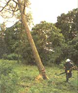

If you live in the country, sooner or later you will be faced with the problem of clearing trees from your land. Unfortunately, the common sense with which many people live their lives seems to evaporate when this somewhat infrequent chore presents itself. I know many competent, thoughtful country people who take greater safety precautions when they are mowing the lawn than when wielding a chain saw in a nearby stand. After spending a lifetime watching how dangerously unpredictable both trees and tree-felling equipment can be, I can only guess that Murphy invented his law while taking down a tree. The resultant injuries are almost always disastrously severe, and completely avoidable. You've probably read what you consider to be an appropriate share of chain saw warnings, but take it from half a century of logging, there's much the manufacturer didn't tell you in the operations manual.
I became involved with cutting trees back in the mid 1940s, and I learned from one of the best-my father. We burned wood as fuel and also cut logs for lumber. In those early years the old cross-cut saw was standard equipment. A man on each end of these long, single-blade, human-powered saws finished the job well enough then, but they couldn't even compete in the same arena with today's chain saws. However, crosscut saw injuries were almost unheard of.
Assuming that you don't want to leave modern advantages behind, your list of equipment starts with a good, sharp chain saw, a couple of sawing wedges of aluminum or plastic, a maul to drive wedges, and good head, eye, and ear protection. Equipment varies somewhat with the type of trees as well as their size and location. Sometimes you also need a long cable to help pull the tree down, as well as a sturdy chain to prevent tree splitting.
If trees are to be used as fuel, lumber, or logs, they should be cut at a time when the sap saturation is at its lowest level. This occurs during late fall through winter, well before annual sap flow and tree budding. Wood sap retards drying of logs and firewood. I strongly recommend felling a tree before foliage appears. Branch cleanup is also much easier if leaves are off the tree.
Your every thought and action must be motivated by a need for safety as you cut down a tree; there is no room for carelessness. Never be in a hurry as you proceed to cut. If possible, cut down smaller trees before getting into the larger varieties. Cutting a slightly leaning, medium-size tree on level ground is best to begin with. You'll then acquire some confidence and become acquainted with the use of your tools in a lower-risk situation.
As you approach the tree you plan to fell, always determine which way the tree is leaning. Gravity pull is a great aid in felling a tree the way you want it to go, and only under extreme conditions should a tree with substantial lean be felled opposite that lean. Such cutting is courting trouble unless you use cables to pull the tree. Most well-proportioned, straight-growing trees can be felled in any direction as controlled by the cutting method, however. Where a heavy accumulation of bulky limbs and branches tend to make a tree heavy on one side, always consider felling it in that direction. Wind can also provide a great assist in steering a tree's direction, and it is nearly always dangerous to try to fell a tree into the wind.
The proximity of nearby trees also plays an important role in establishing direction. Be sure there are no other trees in your cutting direction, as trees that hang up on others can produce a tricky situation. Slight contact or brushing of branches as the tree is well into its fall usually causes no problems, but in the first second or so, a falling tree has very little inertia and can hang up easily.
Having decided on the direction, get your equipment handy at a comfortable distance opposite the direction the tree will fall. Clear away all small brush and fallen branches so you have good footing, should you need to move quickly. Always decide beforehand on an unobstructed path or two so you can move away from the falling tree with confidence when the time comes.
Before getting directly under the tree, inspect for dangerous or loose overhanging limbs. Sometimes such limbs are barely hanging there and may come loose as the tree begins to fall. Be aware of these and avoid the dangerous-looking ones.
With your saw running smoothly, make the undercut into the tree, square to the direction you want the tree to fall. Make the first cut at right angles to the trunk about 18-20 inches off the ground. The undercut should be about ¼ of the tree's diameter. The undercut is also called the notch and must be cut square, as this serves as the hinge for the falling tree. A "V" or rounded undercut can cause problems, so be sure the cut is square. With the initial cut made, cut out from above the initial cut, at a 45 degree angle, all wood so the hinge is now clear. This hinge clearing can be done with a chain saw or ax, as long as all wood back to the initial undercut is removed.
A somewhat deeper undercut will help shift the tree's directional falling force in a chosen direction. But don't undercut much more than a third of the diameter of the tree, or wedging may become difficult, particularly on smaller diameter trees.
After the undercut is made I like to make a circular mark around the entire tree just above the undercut, which I use as a guide for the saw blade when cutting the tree down. Chinking with an ax or a slow-running saw does a good job of making this guide mark. As you begin the back cut (the cut that fells the tree), stand comfortably with good footing. Just start a nice, even cut with every effort to make the saw cut directionally toward the undercut. It is best to take your time and rest after you've made a good start into the back cut. Stay calm. On proceeding with the back cut-at a depth beyond the saw-it's time to start the saw wedge. Using an aluminum or plastic wedge, begin driving it into the back cut. This will prevent the saw from binding should the tree rock back on its hinge just before it falls. Don't force the wedge. Just keep tapping it in as the back cut is deepened.
If you've done things correctly, the back cut should begin opening as your saw gets within a few inches of the undercut. A few good taps on the wedge are in order here and starting a second wedge is sometimes helpful. Again, don't hurry. Observe carefully that sufficient hinge wood remains at laterally opposing sides. Cutting away too much of the hinge wood could result in a free-falling tree, which you must avoid. Normally the tree will fall exactly as planned and as you near this final point, all that is required is a bit more work with the wedges. Listen carefully as you saw or drive the wedges for the typical creaking and snapping sounds just before the tree begins the fall. It is best to periodically stop the saw motor for a few seconds as you listen for these last sounds.
As the tree begins to fall, watch it carefully and be sure to step back to either side. Do not move directly behind the tree as it falls, and make certain to put enough distance between you and the falling tree so that you are clear of any breakaway branches. You can now process the tree as planned, removing brush and limbs.
Sometimes trees branch out just above a single trunk, forming a double trunk. To avoid trunk splitting as the tree falls, several winds of a strong chain or cable should be made about five feet above the cut-off at the stump. You should also take this precaution when cutting trees that lean at more than a 10-15 degree angle or where any sign of trunk cracks or splitting are evident. If a tree trunk splits while falling, part of the trunk may be forced high into the air and fall directly down alongside the stump.
You may eventually have to fell a tree against the direction it leans (as long as the tree does not lean more than 10-15 degrees), and this can usually be done safely with the use of wedges and cable. This chain or cable should be used to pull leaning trees over as the hinge wood nears two or three inches. Keeping the cable pulled firmly as the wedges are driven in assures a safer procedure. Wait until the wind dies down if it isn't a help.
Whenever you suspect a tree is beyond your level of skill or confidence, don't take chances-seek professional help. Severely leaning trees can pose a real risk. These trees often break off and fall long before the undercut can serve as a proper hinge, and can twist wildly around the stump.
Dead trees (particularly those that have been dead three years or more) should also be approached with caution. Here the hinge wood near the undercut possesses less strength and pliability and will sometimes snap or break more quickly as the tree is falling. I recommend the use of a cable at all times when working with dead trees.
Hollow trees, also, should be treated with some caution. Sometimes you won't know if a tree is hollow until you begin cutting. When you discover this condition, plan to leave more hinge wood as you complete the back, as the only available strength in the hinge will be at the sides. Here you should use a wedge as soon as possible after you get into the back cut.
Volumes could be written on safe and dependable chain saw use, but any sensible woodsman will begin the quest for safety with an owner's manual. Within those pages are indispensable guidelines to maintaining both engine and chain transport. It is your responsibility to see that the saw is adjusted according to those guidelines, that the engine idles properly, and that the chain is sharp and fits well to the guide bar. Do not make the classic mistake of continuing to saw knowing that the chain does not stop when the engine idles. Thinking that you will get to the chain readjustment later is a recipe for disaster.
As you get ready to approach the tree for the cut, be sure that your footing is absolutely secure and that you are clad in a good pair of work boots. Avoid off-balance or awkward positions, no matter how inconveniently located your target tree might be. Obviously, the area should be completely clear of pets, children, radios, etc. Anything that distracts, kills.
As you make the cut, run the saw at normal chain speed and hold it firmly with two gloved hands. Do not begin with a slow speed and then accelerate as you proceed. To avoid chain pinching, use a saw wedge as cut depth permits. A tree leaning back on its saw can not only destroy an expensive tool but also cause the chain to snap and fly off. Between major cuts, it is always best to turn off the saw and set it down for a moment. Even if you think you can't afford the time for a quick rest, you can.
Finally, though it hardly needs to be said that alcohol and sawing are a deadly combination, the practice of smoking while cutting a tree is a practice that even experienced woodsmen often overlook as a safety hazard. Though I've been chastised for being a worry wart more than once on this account, it seems to me that the fraction of a second you spend hesitating when an irritating bit of smoke impairs your vision is attention better spent on the job. Take a butt break later.
|
Photos by Norman E. Johnson The basic items need to fell trees safeluy here, atop a freshly cut elm: helmet, goggles, gloves, chain saw, maul, and wedges. |
Photo by Norman E. Johnson Woodcutters select a dying red oak that was struck by lightning a year before cutting. |
Photo by Norman E. Johnson The location of the undercut will determine direction of tree fall |
|
Photo by Norman E. Johnson The completed undercut, which must now becarefully squared. |
Photo by Norman E. Johnson Undercut completed and safely chain in place. |
Photo by Norman E. Johnson Making the back cut squarely towards and just slightly above undercut |
|
Photo by Norman E. Johnson Sometimes the application of a saw wedge is necessary to prevent pinching of the saw blade, which can occur when the back cut is made. |
Photo by Norman E. Johnson Sawyer steps clear of a falling tree. A pre-planned avenue of escape is an absolute necessity, particularly in heavily wooded areas. |
 Photo by Norman E. Johnson The hinge wood now does its job as the tree falls. |
|
Photo by Norman E. Johnson This property felled Dutch elm, in the process of dying of Dutch ehn disease, shows the correct amount of supporting hinge wood between cuts. |
Photo by Norman E. Johnson |
|